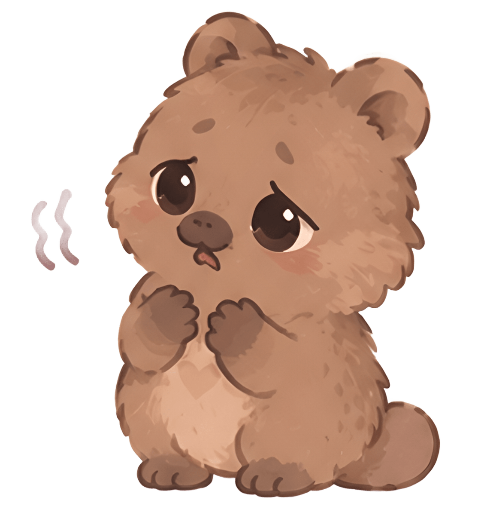
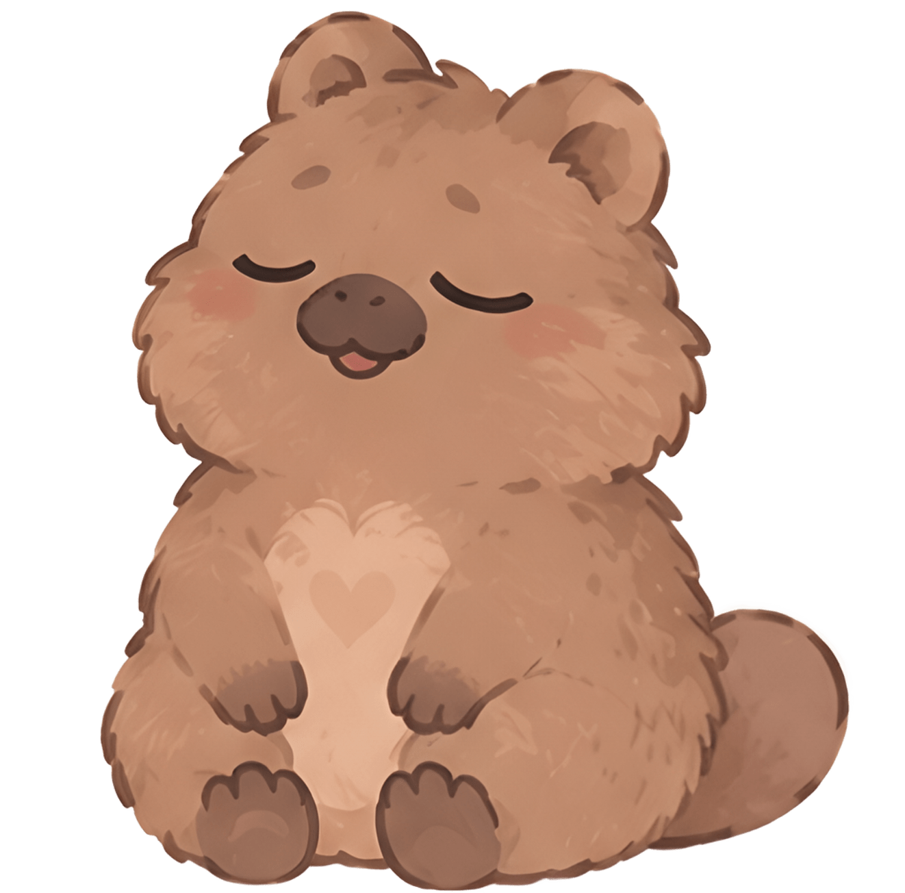

Психическое здоровье
Это не «слабость» и не «странность» — это важная часть твоего благополучия ♡
Забота о ментальном здоровье помогает лучше понимать себя, справляться со стрессом и жить спокойнее.
Узнать больше ↓Мы рядом ♡

✦ С чем мы можем столкнуться?
У каждого бывают сложные периоды. Важно знать, что с этим делать. Нажми на карточку, чтобы узнать больше.
🌧️ Настроение
Грустить иногда — нормально. Но если тяжёлое настроение не проходит неделями и мешает жить, стоит обратить на это внимание.
Депрессия
Подавленность или потеря интереса почти ко всему, которые держатся дольше двух недель.
Апатия
Безразличие: ничего не хочется и ничто не радует, даже то, что раньше нравилось.
Эмоциональное выгорание
Истощение от долгого стресса — например, учёбы без отдыха.
Как это может проявляться
- грусть, пустота или раздражительность почти каждый день
- нет сил, трудно встать утром
- изменился сон или аппетит
- трудно сосредоточиться
- мысли «я ничего не стою», «всё бессмысленно»
Что может помочь
- рассказать о своём состоянии человеку, которому доверяешь
- маленькие шаги: прогулка, сон, еда вовремя
- не требовать от себя слишком многого
- обратиться к психологу — депрессия хорошо поддаётся лечению
ⓘ Только специалист может поставить диагноз. Если ты узнаёшь себя — это повод поговорить с психологом или врачом, а не вешать на себя ярлык.
🌀 Тревожные расстройства
Тревога — естественная реакция на опасность. Расстройством она становится, когда появляется слишком часто, слишком сильно и мешает обычной жизни.
Тревога разлуки
Сильный страх расставаться с близкими и мысли, что с ними что-то случится.
Фобии
Очень сильный страх конкретной вещи или ситуации, из-за которого её избегают.
Паническое расстройство
Повторяющиеся внезапные приступы паники и страх, что приступ повторится.
Как это может проявляться
- сердце колотится, трудно дышать, кружится голова
- постоянное беспокойство, которое трудно остановить
- избегание мест и ситуаций, которые пугают
- напряжение в теле, проблемы со сном
Что может помочь
- медленное дыхание: вдох на 4 счёта, выдох на 6
- упражнение «5-4-3-2-1»: назови 5 вещей, которые видишь, 4 — которые слышишь…
- рассказать взрослому, которому доверяешь
- психотерапия — тревожные расстройства хорошо лечатся
ⓘ Если приступы похожи на проблемы с сердцем или дыханием, сначала стоит провериться у врача.
🍽️ РПП — расстройства пищевого поведения
Это серьёзные состояния, при которых отношения с едой и своим телом начинают управлять жизнью. К ним относятся, например, анорексия, булимия и компульсивное переедание.
Как это может проявляться
- мысли о еде, весе и фигуре занимают почти всё время
- жёсткие ограничения в еде или, наоборот, приступы переедания
- сильное чувство вины после еды
- желание скрывать, что и сколько ты ешь
Что может помочь
- рассказать об этом взрослому, которому доверяешь
- обратиться к врачу или психологу — чем раньше, тем лучше
- помнить: восстановиться можно, и ты этого заслуживаешь
♡ РПП влияет и на психику, и на здоровье тела, поэтому здесь особенно важна помощь специалиста. Поговорить можно анонимно по линии доверия 150.
🧩 ОКР — обсессивно-компульсивное расстройство
ОКР — это не «любовь к порядку». Это навязчивые неприятные мысли (обсессии) и действия (компульсии), которые человек повторяет, чтобы снизить тревогу.
Как это может проявляться
- пугающие мысли, которые появляются против воли
- повторяющиеся действия: проверять, мыть руки, пересчитывать
- ощущение, что если не сделать «ритуал», случится плохое
- на ритуалы уходит много времени
Что может помочь
- понять: навязчивые мысли — не твои желания и не делают тебя плохим
- рассказать близкому человеку
- психотерапия (КПТ) — один из самых действенных способов
ⓘ Только специалист может поставить диагноз.
⚡ ПТСР — посттравматическое стрессовое расстройство
Может появиться после очень пугающего или тяжёлого события: насилия, аварии, потери. Это нормальная реакция психики на ненормальную ситуацию.
Как это может проявляться
- воспоминания, которые накатывают сами, кошмары
- избегание всего, что напоминает о событии
- постоянное напряжение, легко испугаться
- это длится дольше месяца после события
Что может помочь
- безопасное место и люди, которым доверяешь
- не заставлять себя «просто забыть»
- специалист, который работает с травмой
ⓘ То, что случилось, — не твоя вина. Помощь работает, даже если прошло много времени.
🎯 СДВГ — синдром дефицита внимания и гиперактивности
Это особенность работы мозга, которая обычно заметна с детства. СДВГ — не лень и не плохое воспитание.
Как это может проявляться
- трудно удерживать внимание, легко отвлечься
- забываешь и теряешь вещи, сложно начать задачу
- трудно усидеть на месте
- действуешь импульсивно, перебиваешь
Что может помочь
- делить большие задачи на маленькие шаги
- списки, напоминания, таймеры
- диагностика у специалиста — она помогает подобрать поддержку
ⓘ Невнимательность бывает у всех. Поставить диагноз может только специалист.
🌙 Другие состояния
Есть и другие трудности, о которых важно говорить.
Проблемы со сном
Трудно уснуть, часто просыпаешься или не высыпаешься. Помогают режим и отдых от экрана перед сном. Если не проходит — стоит сходить к врачу.
Селф-харм
Когда человек причиняет себе вред, это сигнал сильной боли, а не «желание внимания». Ты заслуживаешь поддержки.
Зависимость
От веществ, игр или телефона: когда становится трудно остановиться, даже если это вредит.
Если ты причиняешь себе вред или думаешь об этом
Пожалуйста, расскажи взрослому, которому доверяешь, или позвони — тебя выслушают и не будут осуждать:
🧠 Что происходит с мозгом?
При стрессе и тревоге в мозге включается «система тревоги» — миндалевидное тело (амигдала). Оно запускает выброс гормонов стресса, чтобы подготовить тело к опасности. Если это длится долго, страдают сон, настроение, внимание и память.
♡ Что можно сделать?
- Говорить о своих чувствах с тем, кому доверяешь
- Заботиться о себе: сон, еда, движение
- Пробовать дыхательные упражнения
- Не бояться обращаться за помощью
👥 Где найти поддержку?
Выбери удобный для себя формат:
⭐ Помни:
Просить о помощи — это не слабость, а смелость ♡
